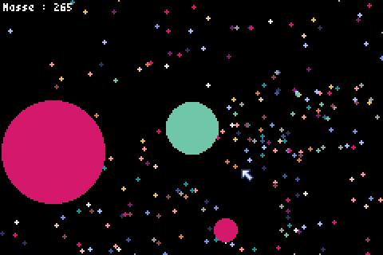
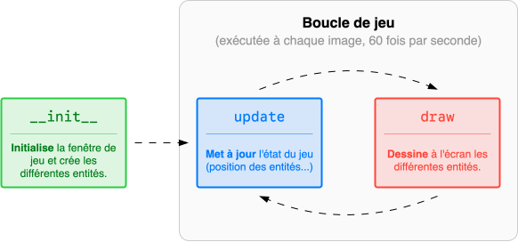
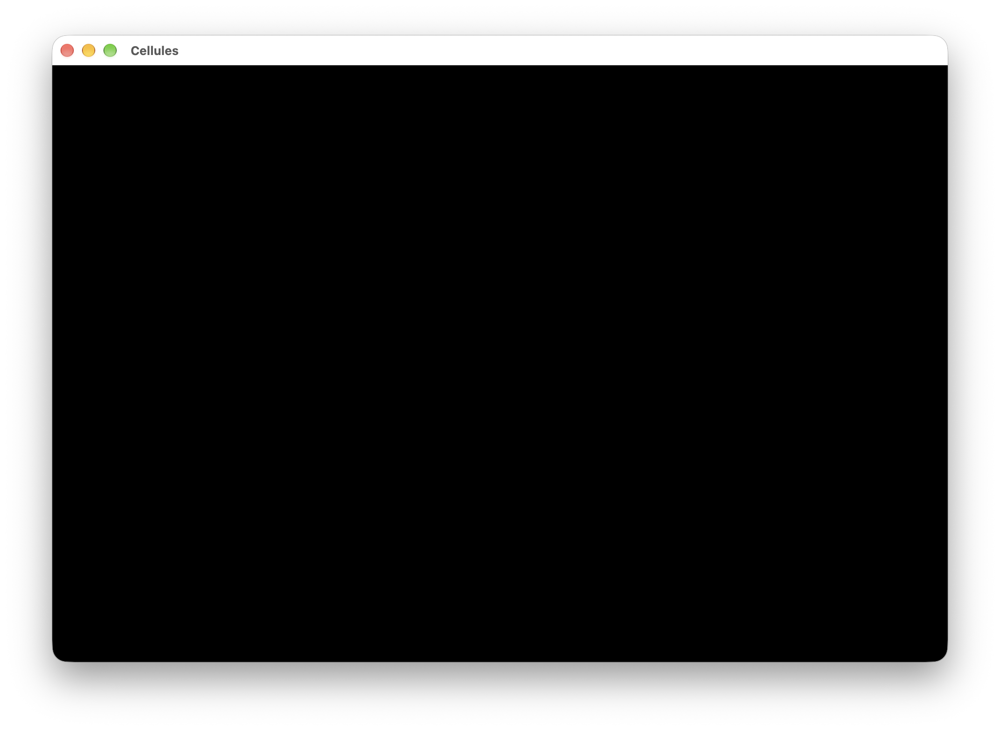
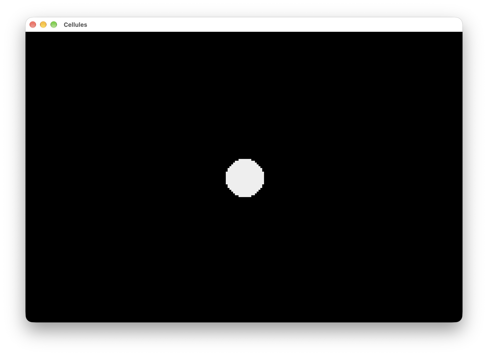
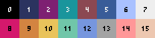
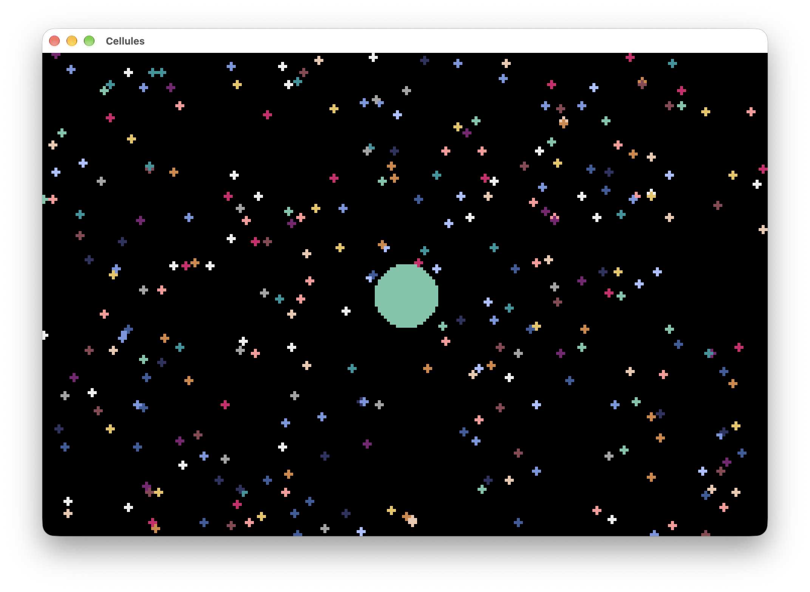
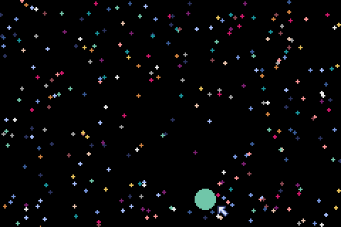
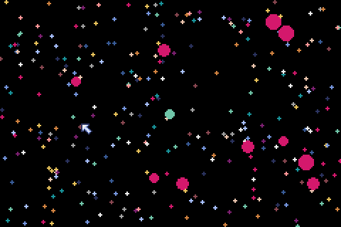
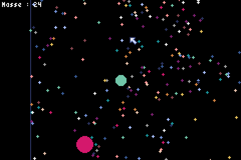

Cellules, un Agar.io simplifié¶
Description¶
Dans le jeu Agar.io, chaque joueur dirige une cellule dans une boîte de Petri. Le principe du jeu est simple : on mange ce qui est plus petit que soi, on se fait manger par ce qui est plus gros. Chaque repas fait grossir, mais plus on est gros, plus on est lent.

Le but de ce mini-projet est d'en programmer une version simplifiée avec le module Pyxel en programmation orientée objet.
Grains, joueur et bots sont tous des cellules : une seule classe Cellule suffit pour créer des centaines d'objets. Le joueur et les bots ne diffèrent que par leur déplacement : on utilisera l'héritage (hors-programme).
Rendu attendu¶
-
Un fichier
.pycontenant la version la plus avancée de votre jeu. Il doit s'exécuter sans erreur, et chaque méthode doit être commentée. -
Un compte rendu qui répond aux questions numérotées et décrit les améliorations ajoutées dans la section « À votre sauce ».
Documentation Pyxel
Toutes les fonctions de Pyxel utilisées dans ce projet (pyxel.circ, pyxel.rndf, pyxel.mouse_x, pyxel.camera…) sont décrites dans la documentation de Pyxel.
Le programme minimal¶
Pyxel fonctionne avec une boucle de jeu : tant que la fenêtre est ouverte, Pyxel appelle la méthode update (mettre à jour les données du jeu), puis la méthode draw (dessiner l'image), et recommence.

On regroupe tout le jeu dans une classe Jeu. Les entités du jeu (grains, joueur, adversaires…) seront des attributs de cette classe.
import pyxel
LARGEUR_ECRAN = 240 # (1)!
HAUTEUR_ECRAN = 160
class Jeu:
def __init__(self):
pyxel.init(LARGEUR_ECRAN, HAUTEUR_ECRAN, title="Cellules", fps=60) # (2)!
pyxel.run(self.update, self.draw) # (3)!
def update(self):
pass # (4)!
def draw(self):
pyxel.cls(0) # (5)!
Jeu() # (6)!
-
Les dimensions de l'écran sont des constantes, écrites en majuscules. Elles resserviront pour placer les objets dans la fenêtre.
-
On crée une fenêtre de 240 × 160 pixels, intitulée « Cellules », qui s'actualise 60 fois par seconde.
-
On démarre la boucle de jeu. Les méthodes
self.updateetself.drawsont écrites sans parenthèses : on ne les appelle pas, on les donne à Pyxel, qui les appellera à chaque image. -
Pour l'instant, il n'y a rien à mettre à jour.
-
On efface l'écran en le remplissant avec la couleur 0 (noir).
-
On crée un seul objet
Jeu: cela exécute__init__, donc ouvre la fenêtre et lance la boucle de jeu.

Ce code constitue le point de départ de n'importe quel jeu Pyxel .
- Ajouter
print("bonjour")juste aprèspyxel.run(...). Que se passe-t-il ? Où faut-il donc créer les attributs deJeu?
Une classe, des centaines d'objets¶
On écrit maintenant la classe Cellule, puis on modifie Jeu pour créer et afficher une cellule. Les lignes ajoutées par rapport au programme minimal sont surlignées :
import math # (1)!
import pyxel
LARGEUR_ECRAN = 240
HAUTEUR_ECRAN = 160
class Cellule: # (2)!
def __init__(self, x, y, masse):
self.x = x # (3)!
self.y = y
self.masse = masse
def rayon(self):
return math.sqrt(self.masse) # (4)!
def draw(self):
pyxel.circ(self.x, self.y, self.rayon(), 7) # (5)!
class Jeu:
def __init__(self):
pyxel.init(LARGEUR_ECRAN, HAUTEUR_ECRAN, title="Cellules", fps=60)
self.cellule = Cellule(120, 80, 100) # (6)!
pyxel.run(self.update, self.draw)
def update(self):
pass
def draw(self):
pyxel.cls(0)
self.cellule.draw() # (7)!
Jeu()
-
Le module
mathfournit la racine carréemath.sqrt. -
La classe est un moule : elle décrit ce qu'est une cellule, mais n'en crée aucune.
-
Chaque objet
Celluleaura ses propres attributsx,yetmasse. -
Le rayon se calcule à partir de la masse (voir l'encadré ci-dessous).
-
Un disque de centre
(x, y), de rayonself.rayon()et de couleur 7 (blanc). -
On crée un objet
Celluleau centre de l'écran, de masse 100, donc de rayon 10. Il est créé avantpyxel.run(voir question 1). -
Jeu.drawne sait pas comment se dessine une cellule : elle le lui demande. Chaque objet est responsable de son propre affichage.

Pourquoi la racine carrée de la masse ?
La surface du disque \(\pi r^2\) doit être proportionnelle à la masse \(m\), d'où \(r = \sqrt{m}\).
-
Une couleur. Ajouter à
Celluleun attributcouleur(Cellule(x, y, masse, couleur)) et l'utiliser dansdraw. Les couleurs de Pyxel :
-
La nourriture. Ajouter à
Jeuune listegrainsdeNB_GRAINS = 300cellules de masse 1, de position et de couleur aléatoires. Les dessiner avant la grosse cellule. Pour l'aléatoire :pyxel.rndi(a, b)(entier) etpyxel.rndf(a, b)(décimal).

Le joueur mange les grains¶

Le joueur suit la souris, mange les grains et grossit.
-
Le joueur. Remplacer la grosse cellule par le joueur : une
Cellulede masseMASSE_DEPART = 10, au centre. Afficher le curseur avecpyxel.mouse(True). -
Suivre la souris. Ajouter à
Cellule:vitesse(self), qui renvoie1(pixel par image) ;deplacer_vers(self, cible_x, cible_y), qui avance la cellule deself.vitesse()pixels vers la cible.
Dans
Jeu.update, déplacer le joueur vers(pyxel.mouse_x, pyxel.mouse_y).Comment avancer vers la cible ?
- Vecteur vers la cible :
dx = cible_x - self.xetdy = cible_y - self.y. - Sa longueur : \(d = \sqrt{dx^2 + dy^2}\) (Pythagore).
- On divise
dxetdypar \(d\) : même direction, longueur 1 (en bleu). - On multiplie par la vitesse \(v\) (en orange) et on l'ajoute à la position.
- Si \(d\) est plus petit que \(v\), on se place directement sur la cible.
-
Manger. Ajouter à
Celluleun attributvivante(Trueau départ) et les méthodes :peut_manger(self, autre): les deux cellules sont vivantes,selfest plus massive, et le centre deautreest dans le disque deself;manger(self, autre):selfrécupère la masse deautre, qui n'est plus vivante.
Dans
Jeu.update, le joueur mange les grains qu'il peut manger.Indication
Pas besoin de racine carrée : le centre est dans le disque si \(dx^2 + dy^2 < r^2\), et \(r^2\) est la masse.
-
Renouveler les grains. Écrire
Jeu.update_grains(self), qui retire les grains mangés puis complète la liste jusqu'àNB_GRAINS. L'appeler à la fin deJeu.update, et dans le constructeur pour remplir la liste vide.Point de vigilance : ne jamais supprimer pendant qu'on parcourt
Ce code est faux :
for grain in self.grains: if self.joueur.peut_manger(grain): self.joueur.manger(grain) self.grains.remove(grain) # NON !Après un
remove, l'élément suivant prend la place du supprimé et la boucle le saute :>>> nombres = [1, 2, 2, 3] >>> for n in nombres: ... if n == 2: ... nombres.remove(n) >>> nombres [1, 2, 3]On marque donc les grains mangés (
vivante) pendant la boucle, puis on construit après une nouvelle liste avec les vivants :
Des adversaires grâce à l'héritage¶

Les bots chassent ce qu'ils peuvent manger… y compris le joueur.
On ajoute des adversaires, les bots. Joueur et bots sont des cellules qui ne diffèrent que par leur déplacement : les classes Joueur et Bot héritent de Cellule et redéfinissent la méthode update.
L'héritage ?
Écrire class Joueur(Cellule): crée une nouvelle classe Joueur qui hérite de Cellule : elle récupère automatiquement tous ses attributs et toutes ses méthodes, sans rien recopier. On dit que Cellule est la classe mère et Joueur la classe fille.
Dans la classe fille, on peut redéfinir une méthode de la classe mère : c'est alors cette nouvelle version qui est utilisée pour les objets Joueur.
Exemple de classe mère :
class Animal:
def __init__(self, nom):
self.nom = nom
def presenter(self):
print("Je suis", self.nom)
def crier(self):
print("...")
Exemples de classes filles :
class Chat(Animal): # Chat hérite d'Animal
def crier(self): # redéfinition
print("Miaou")
class Chien(Animal): # Chien hérite d'Animal
def crier(self): # redéfinition
print("Wouf!")
À l'usage :
%%{init: {"markdownAutoWrap": false}}%%
classDiagram
Cellule <|-- Joueur
Cellule <|-- Bot
class Cellule {
x
y
masse
couleur
vivante
rayon()
vitesse()
peut_manger(autre)
manger(autre)
deplacer_vers(cible_x, cible_y)
update(jeu)
draw()
}
class Joueur {
update(jeu)
}
class Bot {
update(jeu)
}-
Le joueur. Ajouter à
Celluleune méthodeupdate(self, jeu)qui ne fait rien, puis la classeJoueur:Le joueur devient un
Joueur, etJeu.updateappelleself.joueur.update(self). -
Les bots. Créer une classe
Bot(Cellule)vide (pass) et ajouter une dizaine de bots immobiles, de masses aléatoires, pas trop près du joueur. -
Les repas. Le joueur et les bots mangent toutes les cellules plus petites qu'eux. Les bots mangés sont remplacés.
Pourquoi une cellule ne peut-elle pas se manger elle-même ?
-
Le bot chasseur. Redéfinir
updatedansBot: le bot va vers la cellule la plus proche qu'il peut manger.Indication
C'est une recherche de minimum.
-
Partie perdue. Quand le joueur est mangé, afficher « Perdu ! ». Un clic relance la partie.
Indication
pyxel.btnp(pyxel.MOUSE_BUTTON_LEFT)détecte le clic. Une méthodeJeu.resetévite de dupliquer le constructeur.
Un monde plus grand que l'écran¶

La caméra suit le joueur dans un monde de 400 × 400 pixels.
L'écran ne montre plus qu'une partie d'un monde de 400 × 400 pixels. On distingue les coordonnées monde (celles des cellules) et les coordonnées écran (celles des pixels de la fenêtre).
Après pyxel.camera(cx, cy), tout est dessiné décalé de (-cx, -cy) : le point (cx, cy) du monde apparaît en haut à gauche de l'écran.
-
Agrandir le monde. Placer joueur, grains et bots dans un monde de
LARGEUR_MONDE = 400surHAUTEUR_MONDE = 400, avec 1000 grains. -
La caméra. Au début de
Jeu.draw, centrer la caméra sur le joueur, puis dessiner le contour du monde avecpyxel.rectb. -
Le score. Afficher la masse du joueur en haut à gauche. Pourquoi appeler
pyxel.camera()juste avant ? -
La souris. Le joueur ne suit plus la souris : pourquoi ? Corriger
Joueur.update.Indication
La souris est en coordonnées écran. Le joueur est toujours au centre de l'écran.
-
Rester dans le monde. Empêcher les cellules de sortir du monde.
À votre sauce¶
Choisissez une ou plusieurs améliorations (ou inventez-en d'autres) et décrivez-les dans votre compte rendu.
- ★ Perte de masse. Les cellules perdent lentement de la masse, par exemple ×
0.9995à chaque image. - ★★ Fuite. Un bot fuit les cellules assez grosses pour le manger quand elles sont proches (viser le point
(2 * self.x - autre.x, 2 * self.y - autre.y)). - ★★ Virus. Une classe
Virus(Cellule)immobile : les petites cellules se cachent dessous, les grosses qui le touchent perdent la moitié de leur masse. - ★★★ Division. La touche Space divise la cellule du joueur en deux, l'une étant projetée vers la souris. Le joueur contrôle alors une liste de cellules.